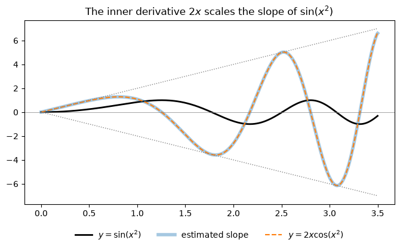

Code
import numpy as np
import sympy as sp
import matplotlib.pyplot as plt
from IPython.display import Math, display
sp.init_printing()
x, t, u, theta = sp.symbols("x t u theta")Miraj Samarakkody
October 26, 2026
Stewart, Calculus, 9th ed., §3.4
Learning objectives. By the end of this lecture you should be able to: 1. Recognize a composite function \(F = f\circ g\) and identify its outer function \(f\) and inner function \(g\). 2. State the Chain Rule in both prime and Leibniz notation, and interpret it as multiplying rates of change. 3. Use the Power Rule combined with the Chain Rule to differentiate \([g(x)]^n\). 4. Differentiate \(b^x\) for any base \(b > 0\). 5. Apply the Chain Rule several times to longer chains, and together with the Product and Quotient Rules. 6. Check every answer symbolically with SymPy and numerically with NumPy.
From §3.1–3.3 we can differentiate:
| Function | Derivative |
|---|---|
| \(x^n\) | \(n x^{n-1}\) |
| \(e^x\) | \(e^x\) |
| \(\sin x,\ \cos x,\ \tan x\) | \(\cos x,\ -\sin x,\ \sec^2 x\) |
| \(f\,g\) | \(f g' + g f'\) |
| \(\dfrac{f}{g}\) | \(\dfrac{g f' - f g'}{g^2}\) |
None of these rules can handle \[F(x) = \sqrt{x^2 + 1}.\] \(F\) is a composite function: if \(y = f(u) = \sqrt u\) and \(u = g(x) = x^2 + 1\), then \(y = F(x) = f(g(x))\), so \(F = f\circ g\). We call \(f\) the outer function and \(g\) the inner function. We already know how to differentiate \(f\) and \(g\). The Chain Rule tells us how to put those derivatives together.
As before, the helper below compares a derivative found by hand with SymPy’s answer.
Motivation: rates multiply. Suppose \(u\) changes twice as fast as \(x\), and \(y\) changes three times as fast as \(u\). Then \(y\) changes \(3 \cdot 2 = 6\) times as fast as \(x\): \[\frac{du}{dx} = 2,\quad \frac{dy}{du} = 3 \quad\Longrightarrow\quad \frac{dy}{dx} = \frac{dy}{du}\cdot\frac{du}{dx} = 6.\] Think of three gears: if gear \(A\) turns \(x\) times, gear \(B\) turns \(u\) times, and gear \(C\) turns \(y\) times, the gear ratios multiply.
The Chain Rule. If \(g\) is differentiable at \(x\) and \(f\) is differentiable at \(g(x)\), then \(F = f\circ g\) is differentiable at \(x\) and \[\boxed{F'(x) = f'\big(g(x)\big)\cdot g'(x)}\] In Leibniz notation, if \(y = f(u)\) and \(u = g(x)\) are both differentiable, then \[\boxed{\frac{dy}{dx} = \frac{dy}{du}\,\frac{du}{dx}}\] In words: the derivative of the outer function, evaluated at the inner function, times the derivative of the inner function.
Warning: in \(f'(g(x))\) the inner function is left unchanged inside \(f'\). Differentiate the outside first, keep the inside as it is, then multiply by the derivative of the inside.
Leibniz notation is a good memory aid, but \(du\) does not really “cancel.” \(\dfrac{dy}{du}\) is not a fraction. The rule still has to be proved (see §7).
We check the rule for general functions \(f\) and \(g\):
\(\displaystyle \frac{d}{dx}f(g(x)) = \frac{d}{d g{\left(x \right)}} f{\left(g{\left(x \right)} \right)} \frac{d}{d x} g{\left(x \right)}\)
Chain rule holds: TrueExample 1. Find \(F'(x)\) if \(F(x) = \sqrt{x^2 + 1}\).
By hand. The outer function is \(f(u) = \sqrt u = u^{1/2}\), so \(f'(u) = \dfrac{1}{2\sqrt u}\). The inner function is \(g(x) = x^2 + 1\), so \(g'(x) = 2x\). \[F'(x) = f'\big(g(x)\big)\cdot g'(x) = \frac{1}{2\sqrt{x^2+1}}\cdot 2x = \frac{x}{\sqrt{x^2+1}}.\]
In Leibniz notation. Let \(u = x^2 + 1\) and \(y = \sqrt u\). Then \[\frac{dy}{dx} = \frac{dy}{du}\,\frac{du}{dx} = \frac{1}{2\sqrt u}\cdot 2x = \frac{x}{\sqrt{x^2+1}}.\]
\(\displaystyle \frac{d}{dx}\left(\sqrt{x^{2} + 1}\right) = \frac{x}{\sqrt{x^{2} + 1}}\)
Agrees with SymPy: TrueExample 2. Differentiate (a) \(y = \sin(x^2)\) and (b) \(y = \sin^2 x\).
These look alike but are different compositions.
(a) The outer function is \(\sin\), the inner function is \(x^2\): \[\frac{dy}{dx} = \underbrace{\cos(x^2)}_{\text{outer}'\text{ at inner}}\cdot\underbrace{2x}_{\text{inner}'} = 2x\cos(x^2).\]
(b) \(\sin^2 x\) means \((\sin x)^2\). The outer function is squaring, the inner function is \(\sin\): \[\frac{dy}{dx} = 2(\sin x)\cdot\cos x = 2\sin x\cos x = \sin 2x.\]
\(\displaystyle \frac{d}{dx}\left(\sin{\left(x^{2} \right)}\right) = 2 x \cos{\left(x^{2} \right)}\)
Agrees with SymPy: True\(\displaystyle \frac{d}{dx}\left(\sin^{2}{\left(x \right)}\right) = \sin{\left(2 x \right)}\)
Agrees with SymPy: TrueThe plot shows why the factor \(2x\) appears in (a). As \(|x|\) grows, \(x^2\) grows faster and faster, so \(\sin(x^2)\) oscillates faster and faster. Its slopes get steeper, and the derivative \(2x\cos(x^2)\) has a growing envelope \(\pm 2x\).
xs = np.linspace(0, 3.5, 600)
slopes = np.gradient(np.sin(xs**2), xs) # numerical estimate of the slope
fig, ax = plt.subplots(figsize=(8, 4))
ax.plot(xs, np.sin(xs**2), "k", lw=2, label=r"$y = \sin(x^2)$")
ax.plot(xs, slopes, lw=4, alpha=0.4, label=r"estimated slope")
ax.plot(xs, 2 * xs * np.cos(xs**2), "--", lw=1.5, label=r"$y = 2x\cos(x^2)$")
ax.plot(xs, 2 * xs, ":", color="gray", lw=1)
ax.plot(xs, -2 * xs, ":", color="gray", lw=1)
ax.axhline(0, color="gray", lw=0.5)
ax.legend(loc="upper center", bbox_to_anchor=(0.5, -0.1), ncol=3, frameon=False)
ax.set_title(r"The inner derivative $2x$ scales the slope of $\sin(x^2)$")
plt.show()
When the outer function is a power, \(y = u^n\) with \(u = g(x)\), the Chain Rule gives: \[\boxed{\frac{d}{dx}\big[g(x)\big]^n = n\big[g(x)\big]^{n-1}\,g'(x)} \qquad\text{or}\qquad \frac{d}{dx}\left(u^n\right) = n u^{n-1}\,\frac{du}{dx}.\] The ordinary Power Rule is the case \(g(x) = x\), where \(g'(x) = 1\).
Example 3. Differentiate \(y = (x^3 - 1)^{100}\).
By hand. Do not expand this. With \(u = x^3 - 1\): \[\frac{dy}{dx} = 100(x^3 - 1)^{99}\cdot 3x^2 = 300x^2(x^3-1)^{99}.\]
\(\displaystyle \frac{d}{dx}\left(\left(x^{3} - 1\right)^{100}\right) = 300 x^{2} \left(x^{3} - 1\right)^{99}\)
Agrees with SymPy: TrueExample 4. Find \(f'(x)\) if \(f(x) = \dfrac{1}{\sqrt[3]{x^2 + x + 1}}\).
By hand. Rewrite as a power first: \(f(x) = (x^2 + x + 1)^{-1/3}\). Then \[f'(x) = -\frac13 (x^2 + x + 1)^{-4/3}\,(2x + 1) = -\frac{2x+1}{3(x^2+x+1)^{4/3}}.\] Rewriting as a power avoids the Quotient Rule.
\(\displaystyle \frac{d}{dx}\left(\frac{1}{\sqrt[3]{x^{2} + x + 1}}\right) = \frac{- 2 x - 1}{3 \left(x^{2} + x + 1\right)^{\frac{4}{3}}}\)
Agrees with SymPy: TrueExample 5. Find the derivative of \(g(t) = \left(\dfrac{t - 2}{2t + 1}\right)^9\).
By hand. Power Rule + Chain Rule on the outside, Quotient Rule on the inside: \[g'(t) = 9\left(\frac{t-2}{2t+1}\right)^8 \cdot \frac{(2t+1)\cdot 1 - (t-2)\cdot 2}{(2t+1)^2} = 9\left(\frac{t-2}{2t+1}\right)^8 \cdot \frac{5}{(2t+1)^2} = \frac{45(t-2)^8}{(2t+1)^{10}}.\]
\(\displaystyle \frac{d}{dt}\left(\frac{\left(t - 2\right)^{9}}{\left(2 t + 1\right)^{9}}\right) = \frac{45 \left(t - 2\right)^{8}}{\left(2 t + 1\right)^{10}}\)
Agrees with SymPy: TrueExample 6. Differentiate \(y = (2x + 1)^5 (x^3 - x + 1)^4\).
By hand. The Product Rule on the outside, the Chain Rule for each factor: \[\begin{aligned} y' &= (2x+1)^5 \cdot 4(x^3 - x + 1)^3(3x^2 - 1) + (x^3 - x + 1)^4\cdot 5(2x+1)^4\cdot 2 \\ &= 2(2x+1)^4(x^3-x+1)^3\big[\,2(2x+1)(3x^2-1) + 5(x^3-x+1)\,\big] \\ &= 2(2x+1)^4(x^3-x+1)^3\,(17x^3 + 6x^2 - 9x + 3). \end{aligned}\] Factoring out the common powers \((2x+1)^4(x^3-x+1)^3\) keeps the answer readable.
\(\displaystyle \frac{d}{dx}\left(\left(2 x + 1\right)^{5} \left(x^{3} - x + 1\right)^{4}\right) = 2 \left(2 x + 1\right)^{4} \left(x^{3} - x + 1\right)^{3} \left(17 x^{3} + 6 x^{2} - 9 x + 3\right)\)
Agrees with SymPy: TrueExample 7. Differentiate \(y = e^{\sin x}\).
By hand. The outer function is \(e^u\) (its own derivative), the inner function is \(u = \sin x\): \[\frac{dy}{dx} = e^{\sin x}\cdot\cos x.\] In general, \(\dfrac{d}{dx}\,e^{g(x)} = e^{g(x)}\,g'(x)\).
\(\displaystyle \frac{d}{dx}\left(e^{\sin{\left(x \right)}}\right) = e^{\sin{\left(x \right)}} \cos{\left(x \right)}\)
Agrees with SymPy: TrueDerivative of \(b^x\). For any base \(b > 0\), write \(b = e^{\ln b}\), so \(b^x = \left(e^{\ln b}\right)^x = e^{(\ln b)x}\). The Chain Rule with inner function \((\ln b)\,x\) gives \[\frac{d}{dx}\left(b^x\right) = e^{(\ln b)x}\cdot\ln b = b^x \ln b.\] \[\boxed{\frac{d}{dx}\left(b^x\right) = b^x \ln b}\] When \(b = e\), \(\ln e = 1\) and we recover \(\dfrac{d}{dx}e^x = e^x\). This is why \(e\) is the “natural” base: it is the only base with no extra constant.
Example 8. \(\dfrac{d}{dx}\left(2^x\right) = 2^x\ln 2 \approx (0.693)\,2^x\). Compare §3.1, where we estimated \(\lim_{h\to0}\dfrac{2^h - 1}{h} \approx 0.69\).
\(\displaystyle \frac{d}{dx}\left(b^{x}\right) = b^{x} \log{\left(b \right)}\)
Agrees with SymPy: True\(\displaystyle \frac{d}{dx}\left(2^{x}\right) = 2^{x} \log{\left(2 \right)}\)
Agrees with SymPy: True
ln 2 ≈ 0.6931471805599453The Chain Rule extends to compositions of three or more functions. If \(y = f(u)\), \(u = g(v)\), \(v = h(x)\), then \[\frac{dy}{dx} = \frac{dy}{du}\,\frac{du}{dv}\,\frac{dv}{dx}, \qquad\text{i.e.}\qquad \frac{d}{dx} f\Big(g\big(h(x)\big)\Big) = f'\Big(g\big(h(x)\big)\Big)\cdot g'\big(h(x)\big)\cdot h'(x).\] Work from the outside in, one layer at a time.
Example 9. If \(f(x) = \sin(\cos(\tan x))\), then \[\begin{aligned} f'(x) &= \cos(\cos(\tan x))\cdot\frac{d}{dx}\cos(\tan x) \\ &= \cos(\cos(\tan x))\cdot\big[-\sin(\tan x)\big]\cdot\frac{d}{dx}\tan x \\ &= -\cos(\cos(\tan x))\,\sin(\tan x)\,\sec^2 x. \end{aligned}\]
\(\displaystyle \frac{d}{dx}\left(\sin{\left(\cos{\left(\tan{\left(x \right)} \right)} \right)}\right) = - \sin{\left(\tan{\left(x \right)} \right)} \cos{\left(\cos{\left(\tan{\left(x \right)} \right)} \right)} \sec^{2}{\left(x \right)}\)
Agrees with SymPy: TrueExample 10. Differentiate \(y = e^{\sec 3\theta}\).
By hand. Three layers: \(e^{(\cdot)}\), then \(\sec(\cdot)\), then \(3\theta\). \[\frac{dy}{d\theta} = e^{\sec 3\theta}\cdot\frac{d}{d\theta}(\sec 3\theta) = e^{\sec 3\theta}\cdot\sec 3\theta\tan 3\theta\cdot\frac{d}{d\theta}(3\theta) = 3\,e^{\sec 3\theta}\sec 3\theta\tan 3\theta.\]
\(\displaystyle \frac{d}{d\theta}\left(e^{\sec{\left(3 \theta \right)}}\right) = 3 e^{\sec{\left(3 \theta \right)}} \tan{\left(3 \theta \right)} \sec{\left(3 \theta \right)}\)
Agrees with SymPy: TrueExample 11 (values from a table). Suppose \(h(x) = f(g(x))\) with \(g(1) = 4\), \(g'(1) = 3\), and \(f'(4) = 5\). Then \[h'(1) = f'\big(g(1)\big)\cdot g'(1) = f'(4)\cdot 3 = 15.\] Note that we need \(f'\) at \(g(1) = 4\), not at \(1\).
As in earlier sections, we compare each by-hand derivative with a central difference \(\dfrac{f(x+h) - f(x-h)}{2h}\) at many points.
def numeric_check(f, fprime, a=0.2, b=1.2, step=1e-6):
fn, dfn = sp.lambdify(x, f, "numpy"), sp.lambdify(x, fprime, "numpy")
xs = np.linspace(a, b, 200)
approx = (fn(xs + step) - fn(xs - step)) / (2 * step)
exact = dfn(xs)
return np.max(np.abs(approx - exact)) / np.max(np.abs(exact))
tests = {
r"\sqrt{x^2+1}": (sp.sqrt(x**2 + 1), x / sp.sqrt(x**2 + 1)),
r"\sin(x^2)": (sp.sin(x**2), 2*x * sp.cos(x**2)),
r"(x^3-1)^{100}": ((x**3 - 1)**100, 300 * x**2 * (x**3 - 1)**99),
r"(2x+1)^5(x^3-x+1)^4": ((2*x + 1)**5 * (x**3 - x + 1)**4,
2 * (2*x + 1)**4 * (x**3 - x + 1)**3 * (17*x**3 + 6*x**2 - 9*x + 3)),
r"e^{\sin x}": (sp.exp(sp.sin(x)), sp.exp(sp.sin(x)) * sp.cos(x)),
r"2^x": (2**x, 2**x * sp.log(2)),
r"\sin(\cos(\tan x))": (sp.sin(sp.cos(sp.tan(x))),
-sp.cos(sp.cos(sp.tan(x))) * sp.sin(sp.tan(x)) * sp.sec(x)**2),
}
for name, (f, fp) in tests.items():
rel = numeric_check(f, fp)
display(Math(rf"{name}: \quad \text{{relative error}} \approx {rel:.1e}"))\(\displaystyle \sqrt{x^2+1}: \quad \text{relative error} \approx 2.0e-10\)
\(\displaystyle \sin(x^2): \quad \text{relative error} \approx 1.2e-10\)
\(\displaystyle (x^3-1)^{100}: \quad \text{relative error} \approx 2.9e-10\)
\(\displaystyle (2x+1)^5(x^3-x+1)^4: \quad \text{relative error} \approx 6.1e-11\)
\(\displaystyle e^{\sin x}: \quad \text{relative error} \approx 2.5e-10\)
\(\displaystyle 2^x: \quad \text{relative error} \approx 1.8e-10\)
\(\displaystyle \sin(\cos(\tan x)): \quad \text{relative error} \approx 1.3e-10\)
A first attempt. Let \(\Delta u = g(x + \Delta x) - g(x)\) and \(\Delta y = f(u + \Delta u) - f(u)\). It is tempting to write \[\frac{\Delta y}{\Delta x} = \frac{\Delta y}{\Delta u}\cdot\frac{\Delta u}{\Delta x}\] and let \(\Delta x \to 0\). Since \(g\) is continuous, \(\Delta u \to 0\), so the two factors go to \(f'(u)\) and \(g'(x)\). The problem: \(\Delta u\) may equal \(0\) for \(\Delta x \neq 0\) (for example, when \(g\) is constant near \(x\)), and then we divided by zero.
A correct proof. Since \(g\) is differentiable at \(a\), we can write \[\Delta u = g'(a)\,\Delta x + \varepsilon_1\,\Delta x, \qquad \text{where } \varepsilon_1 \to 0 \text{ as } \Delta x \to 0.\] Similarly, with \(b = g(a)\), since \(f\) is differentiable at \(b\), \[\Delta y = f'(b)\,\Delta u + \varepsilon_2\,\Delta u, \qquad \text{where } \varepsilon_2 \to 0 \text{ as } \Delta u \to 0\] (define \(\varepsilon_2 = 0\) when \(\Delta u = 0\), so this holds even then). Substituting the first equation into the second, \[\Delta y = \big[f'(b) + \varepsilon_2\big]\big[g'(a) + \varepsilon_1\big]\Delta x \quad\Longrightarrow\quad \frac{\Delta y}{\Delta x} = \big[f'(b) + \varepsilon_2\big]\big[g'(a) + \varepsilon_1\big].\] No division by \(\Delta u\) is needed. As \(\Delta x \to 0\), \(\Delta u \to 0\), so \(\varepsilon_1 \to 0\) and \(\varepsilon_2 \to 0\). Therefore \[\frac{dy}{dx} = \lim_{\Delta x\to0}\frac{\Delta y}{\Delta x} = f'(b)\,g'(a) = f'\big(g(a)\big)\,g'(a). \qquad\blacksquare\]
Try these by hand first, then run the cell below to check.
a = sp.symbols("a")
problems = [
((5*x**4 - 3*x)**7, x),
(sp.sqrt(1 - 2*x), x),
(sp.cos(a**3 + x**3), x),
(x * sp.exp(-x**2), x),
(sp.tan(3*t)**2, t),
(10**(1 - x**2), x),
(sp.sin(sp.sin(sp.sin(x))), x),
]
for i, (f, var) in enumerate(problems, 1):
df = sp.diff(f, var)
df = sp.factor(df) if i in (1, 4) else df
display(Math(rf"\text{{{i}.}}\quad \frac{{d}}{{d{sp.latex(var)}}}\left({sp.latex(f)}\right) = {sp.latex(df)}"))
# 8. tangent line
y = (1 + 2*x)**10
m = sp.diff(y, x).subs(x, 0)
display(Math(rf"\text{{8.}}\quad y = {sp.latex(sp.expand(1 + m*x))}"))
# 9. F'(5) = f'(g(5)) g'(5) = f'(-2) g'(5)
display(Math(rf"\text{{9.}}\quad F'(5) = f'(-2)\cdot g'(5) = {4 * 6}"))\(\displaystyle \text{1.}\quad \frac{d}{dx}\left(\left(5 x^{4} - 3 x\right)^{7}\right) = 7 x^{6} \left(5 x^{3} - 3\right)^{6} \left(20 x^{3} - 3\right)\)
\(\displaystyle \text{2.}\quad \frac{d}{dx}\left(\sqrt{1 - 2 x}\right) = - \frac{1}{\sqrt{1 - 2 x}}\)
\(\displaystyle \text{3.}\quad \frac{d}{dx}\left(\cos{\left(a^{3} + x^{3} \right)}\right) = - 3 x^{2} \sin{\left(a^{3} + x^{3} \right)}\)
\(\displaystyle \text{4.}\quad \frac{d}{dx}\left(x e^{- x^{2}}\right) = - \left(2 x^{2} - 1\right) e^{- x^{2}}\)
\(\displaystyle \text{5.}\quad \frac{d}{dt}\left(\tan^{2}{\left(3 t \right)}\right) = \left(6 \tan^{2}{\left(3 t \right)} + 6\right) \tan{\left(3 t \right)}\)
\(\displaystyle \text{6.}\quad \frac{d}{dx}\left(10^{1 - x^{2}}\right) = - 2 \cdot 10^{1 - x^{2}} x \log{\left(10 \right)}\)
\(\displaystyle \text{7.}\quad \frac{d}{dx}\left(\sin{\left(\sin{\left(\sin{\left(x \right)} \right)} \right)}\right) = \cos{\left(x \right)} \cos{\left(\sin{\left(x \right)} \right)} \cos{\left(\sin{\left(\sin{\left(x \right)} \right)} \right)}\)
\(\displaystyle \text{8.}\quad y = 20 x + 1\)
\(\displaystyle \text{9.}\quad F'(5) = f'(-2)\cdot g'(5) = 24\)
| Function | Derivative | Rule |
|---|---|---|
| \(f\big(g(x)\big)\) | \(f'\big(g(x)\big)\,g'(x)\) | Chain |
| \(\big[g(x)\big]^n\) | \(n\big[g(x)\big]^{n-1}g'(x)\) | Power + Chain |
| \(e^{g(x)}\) | \(e^{g(x)}\,g'(x)\) | Chain |
| \(b^x\) | \(b^x \ln b\) | Chain (\(b^x = e^{x\ln b}\)) |
In Leibniz notation: \[\frac{dy}{dx} = \frac{dy}{du}\,\frac{du}{dx} \qquad\qquad \frac{dy}{dx} = \frac{dy}{du}\,\frac{du}{dv}\,\frac{dv}{dx}\]
Key ideas. - Identify the outer and inner functions. Differentiate the outer function, leave the inner function unchanged inside it, then multiply by the derivative of the inner function. - \(\sin(x^2) \neq \sin^2 x\): they are different compositions with different derivatives. - Don’t expand large powers like \((x^3-1)^{100}\); use the Power Rule with the Chain Rule. - Rewrite roots and reciprocals as powers to avoid the Quotient Rule. - For longer chains, work from the outside in, one layer at a time. - The naive “cancel \(du\)” proof fails when \(\Delta u = 0\); the \(\varepsilon\) proof avoids dividing by \(\Delta u\).
Previous: §3.3 Derivatives of Trigonometric Functions.